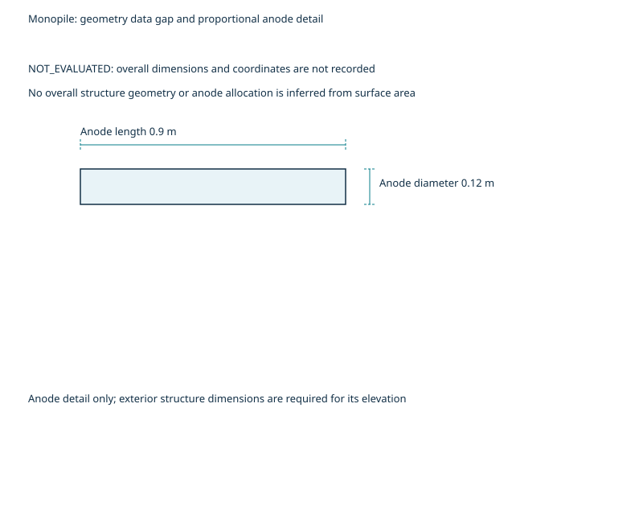

The mass-sized arrangement of 25 anodes does not meet the criterion; 48 anodes are needed and final current governs.
Published geometry and synthetic or assumed CP inputs; screening examples requiring engineering review.
clearance required before outward release
| Revision | Date | What changed and why |
|---|---|---|
| 0 | 2026-10-25 | Initial step data and public report copies from saved case evidence. |
| 1 | 2026-10-26 | Correct pipeline verdict summaries, governing required counts and phase-specific density locators. |

State geometry, environment, coating and anode inputs.
| Quantity | Symbol | Value | Unit | Input class | Basis | Source |
|---|---|---|---|---|---|---|
| Structure and zones | not applicable | Monopile exterior; exterior seawater surfaces | not applicable | synthetic | Synthetic case input and saved results | [3], [4] |
| Design life | t | 30.0 | yr | synthetic | Synthetic case input and saved results | [3] |
| submerged surface area | A | 1200.0 | m² | synthetic | Synthetic case input and saved results | [3] |
| submerged coating category | not applicable | III | not applicable | synthetic | Synthetic case input and saved results | [3], [4] |
| submerged initial coating breakdown | f_ci | 0.020 | dimensionless | synthetic | DNV-RP-B401 (May 2021); Coating breakdown factors; dnv-rp-b401 2021-05 Table 8-4 (as cited by the case pack) | [4] |
| submerged mean coating breakdown | f_cm | 0.200 | dimensionless | synthetic | DNV-RP-B401 (May 2021); Coating breakdown factors; dnv-rp-b401 2021-05 Table 8-4 (as cited by the case pack) | [4] |
| submerged final coating breakdown | f_cf | 0.380 | dimensionless | synthetic | DNV-RP-B401 (May 2021); Coating breakdown factors; dnv-rp-b401 2021-05 Table 8-4 (as cited by the case pack) | [4] |
| Seawater temperature | T | 8.0 | °C | synthetic | Synthetic case input and saved results | [3] |
| Seawater resistivity | rho | 0.280 | Ω m | synthetic | Synthetic case input and saved results | [3] |
| Anode alloy and type | not applicable | aluminium; stand_off | not applicable | synthetic | Synthetic case input and saved results | [3], [4] |
| Net mass per anode | m_a | 150.0 | kg | synthetic | Synthetic case input and saved results | [3] |
| Anode length | L_a | 0.900 | m | synthetic | Synthetic case input and saved results | [3] |
| Anode radius | d_a | 0.060 | m | synthetic | Synthetic case input and saved results | [3] |
| Electrochemical capacity | epsilon | 2000 | Ah/kg | synthetic | DNV-RP-B401 (May 2021); Anode materials; dnv-rp-b401 2021-05 Table 8-6 (as cited by the case pack) | [4] |
The stated input classes and missing data apply to this example.
State the criteria and their recorded edition basis.
| Quantity | Symbol | Value | Unit | Input class | Basis | Source |
|---|---|---|---|---|---|---|
| submerged initial current density | i_initial | 0.200 | A/m² | synthetic | DNV-RP-B401 (May 2021); Design current densities; dnv-rp-b401 2021-05 Table 8-1 (as cited by the case pack) | [4] |
| submerged mean current density | i_mean | 0.100 | A/m² | synthetic | DNV-RP-B401 (May 2021); Design current densities; dnv-rp-b401 2021-05 Table 8-2 (as cited by the case pack) | [4] |
| submerged final current density | i_final | 0.130 | A/m² | synthetic | DNV-RP-B401 (May 2021); Design current densities; dnv-rp-b401 2021-05 Table 8-1 (as cited by the case pack) | [4] |
| Utilisation factor | u | 0.85 | dimensionless | synthetic | Synthetic case input and saved results | [4] |
| Protective potential and reference electrode | not applicable | NOT_EVALUATED: qualify the applicable potential and reference electrode before a survey criterion is set | not applicable | synthetic | Synthetic case input and saved results | [3], [4] |
| Checks applied | not applicable | Mass; initial output and final output | not applicable | synthetic | Synthetic case input and saved results | [3], [4] |
Only the recorded aggregate criteria are assessed.
Compare lifetime mass and current-output requirements.
| Quantity | Symbol | Value | Unit | Input class | Basis | Source |
|---|---|---|---|---|---|---|
| Initial current demand | I_initial | 4.8 | A | synthetic | Synthetic case input and saved results | [4] |
| Mean current demand | I_mean | 24.0 | A | synthetic | Synthetic case input and saved results | [4] |
| Final current demand | I_final | 59.3 | A | synthetic | Synthetic case input and saved results | [4] |
| Initial output per anode | I_a_initial | 1.6317 | A | synthetic | Synthetic case input and saved results | [4] |
| Initial anode resistance | R_a_initial | 0.153216 | Ω | synthetic | Synthetic case input and saved results | [4] |
| Final output per anode | I_a_final | 1.2489 | A | synthetic | Synthetic case input and saved results | [4] |
| Final anode resistance | R_a_final | 0.200184 | Ω | synthetic | Synthetic case input and saved results | [4] |
| Anodes needed for mass | N_mass | 25 | anodes | synthetic | Synthetic case input and saved results | [4] |
| Anodes needed for initial | N_initial | 3 | anodes | synthetic | Synthetic case input and saved results | [4] |
| Anodes needed for final | N_final | 48 | anodes | synthetic | Synthetic case input and saved results | [4] |
| Governing check | not applicable | final | not applicable | synthetic | Synthetic case input and saved results | [3], [4] |
The mass-sized arrangement of 25 anodes does not meet the criterion; 48 anodes are needed and final current governs.
State the recorded allocation and positions requiring attention.
| Quantity | Symbol | Value | Unit | Input class | Basis | Source |
|---|---|---|---|---|---|---|
| Arrangement anode count | N_p | 25 | anodes | synthetic | Synthetic case input and saved results | [4] |
| Anodes per zone | not applicable | NOT_EVALUATED: only an aggregate count is recorded; no zone allocation is inferred | not applicable | synthetic | Synthetic case input and saved results | [3], [4] |
| Deepest position | not applicable | NOT_EVALUATED: elevations and member coordinates are not recorded | not applicable | synthetic | Synthetic case input and saved results | [3], [4] |
Allocation is limited to the quantities recorded in the case data.
Compare the provided arrangement with the saved demand.
| Quantity | Symbol | Value | Unit | Input class | Basis | Source |
|---|---|---|---|---|---|---|
| Anodes provided | N_p | 25 | anodes | synthetic | Synthetic case input and saved results | [4] |
| Anodes needed | N_r | 48 | anodes | synthetic | Synthetic case input and saved results | [4] |
| Mass provided | M_p | 3750.0 | kg | synthetic | Synthetic case input and saved results | [3], [4] |
| Mass needed | M_r | 3710.1 | kg | synthetic | Synthetic case input and saved results | [4] |
| Initial output provided | I_p_initial | 40.8 | A | synthetic | Synthetic case input and saved results | [4] |
| Final output provided | I_p_final | 31.2 | A | synthetic | Synthetic case input and saved results | [4] |
| Mass margin | margin | 1.1 | % | synthetic | Synthetic case input and saved results | [3], [4] |
| Initial margin | margin | 749.8 | % | synthetic | Synthetic case input and saved results | [4] |
| Final margin | margin | −47.3 | % | synthetic | Synthetic case input and saved results | [4] |
| Aggregate result | not applicable | does not meet the criterion | not applicable | synthetic | Synthetic case input and saved results | [3], [4] |
| Additional initial-design anodes | delta_N | 23 | anodes | synthetic | Synthetic case input and saved results | [4] |
| Additional initial-design net mass | delta_M | 3450.0 | kg | synthetic | Synthetic case input and saved results | [3], [4] |
The mass-sized arrangement of 25 anodes does not meet the criterion; 48 anodes are needed and final current governs.
Identify survey positions and the inputs needed to set an intervention plan.
| Quantity | Symbol | Value | Unit | Input class | Basis | Source |
|---|---|---|---|---|---|---|
| Maintainer monitoring and initial-design rule | not applicable | When protection criteria are not met or their attainment is uncertain, monitoring is required. Where monitoring and retrofit are not planned, provide adequate anodes in the initial design. | not applicable | synthetic | Synthetic case input and saved results | [3], [4] |
| Potential measurement positions | not applicable | deepest exterior seawater position; remote circumference away from anodes | not applicable | synthetic | Synthetic case input and saved results | [3], [4] |
| Reference electrode | not applicable | NOT_EVALUATED: confirm the applicable electrode and potential basis | not applicable | synthetic | Synthetic case input and saved results | [3], [4] |
| Survey frequency | not applicable | NOT_EVALUATED: service schedule and access are required | not applicable | synthetic | Synthetic case input and saved results | [3], [4] |
| Trigger potential | not applicable | NOT_EVALUATED: qualified criterion and measured potentials are required | not applicable | synthetic | Synthetic case input and saved results | [3], [4] |
| Action at trigger | not applicable | NOT_EVALUATED: investigate; size local intervention after condition and continuity checks | not applicable | synthetic | Synthetic case input and saved results | [3], [4] |
| Retrofit quantity and required date | not applicable | NOT_EVALUATED: local demand, depletion, access and lead time are required | not applicable | synthetic | Synthetic case input and saved results | [3], [4] |
| Initial-design option | not applicable | Provide adequate anode mass and output before installation if monitoring and retrofit are not planned | not applicable | synthetic | Synthetic case input and saved results | [3], [4] |
| Inputs still needed | not applicable | reference electrode and applicable potential criterion; measured potentials at deep and remote positions; survey access and service schedule; remaining anode mass and depletion rate; electrical continuity and local current demand; retrofit access and delivery lead time | not applicable | synthetic | Synthetic case input and saved results | [3], [4] |
NOT_EVALUATED: supply the listed inputs before setting survey criteria and intervention dates.
Use the additional initial-design anodes and net mass stated in the check table; recheck the final arrangement.
When protection criteria are not met or their attainment is uncertain, monitoring is required. Where monitoring and retrofit are not planned, provide adequate anodes in the initial design.
NOT_EVALUATED: local quantity and required date need potentials, continuity, condition, demand and access evidence.
Aggregate sizing only. Local potentials, allocation, continuity and installed condition are not established.
DNV-RP-B401 (May 2021); edition and locators retained from the case pack only.
[3] docs/domains/cathodic_protection/reports/cases/S02/input.yml; commit d34bda5cf18d11be48b17c7ba94e5c8127af2bf2; SHA-256 6cfb806fdcbe000468e6ab4cbefb61329f38a72c47a5ce7f6fcfa1752669f04d. Repository source, not a hosted link.
[4] docs/domains/cathodic_protection/reports/cases/S02/results.json; commit d34bda5cf18d11be48b17c7ba94e5c8127af2bf2; SHA-256 201cba2fda77d4aedb482f89b66dc10791055d947962cc36d46e5ea3584b98c0. Repository source, not a hosted link.